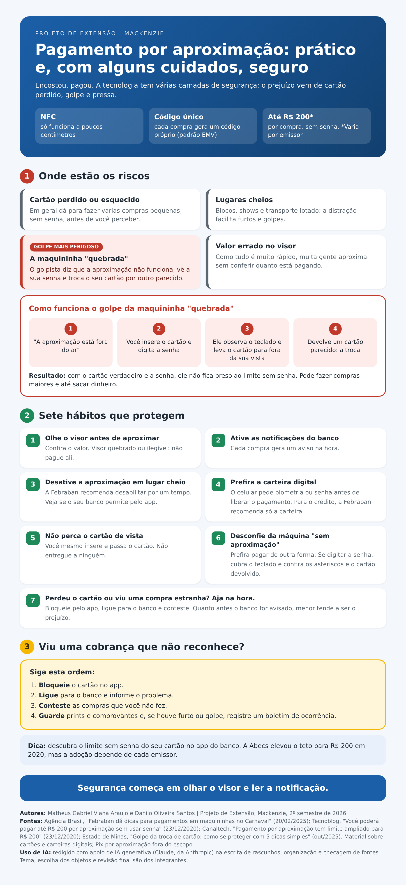

Infográfico para download
Uma página com os riscos, o golpe passo a passo, os sete hábitos e o que fazer ao ver uma cobrança desconhecida.


Uso de IA: este material foi redigido com apoio de IA generativa (Claude, da Anthropic). O tema, a escolha dos objetos e a revisão final são dos integrantes.